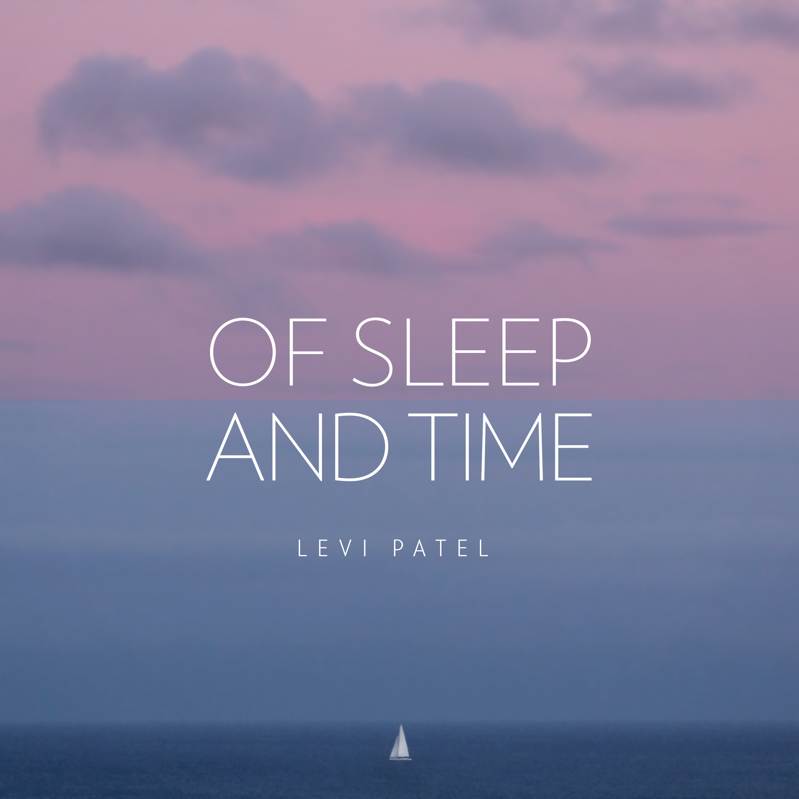
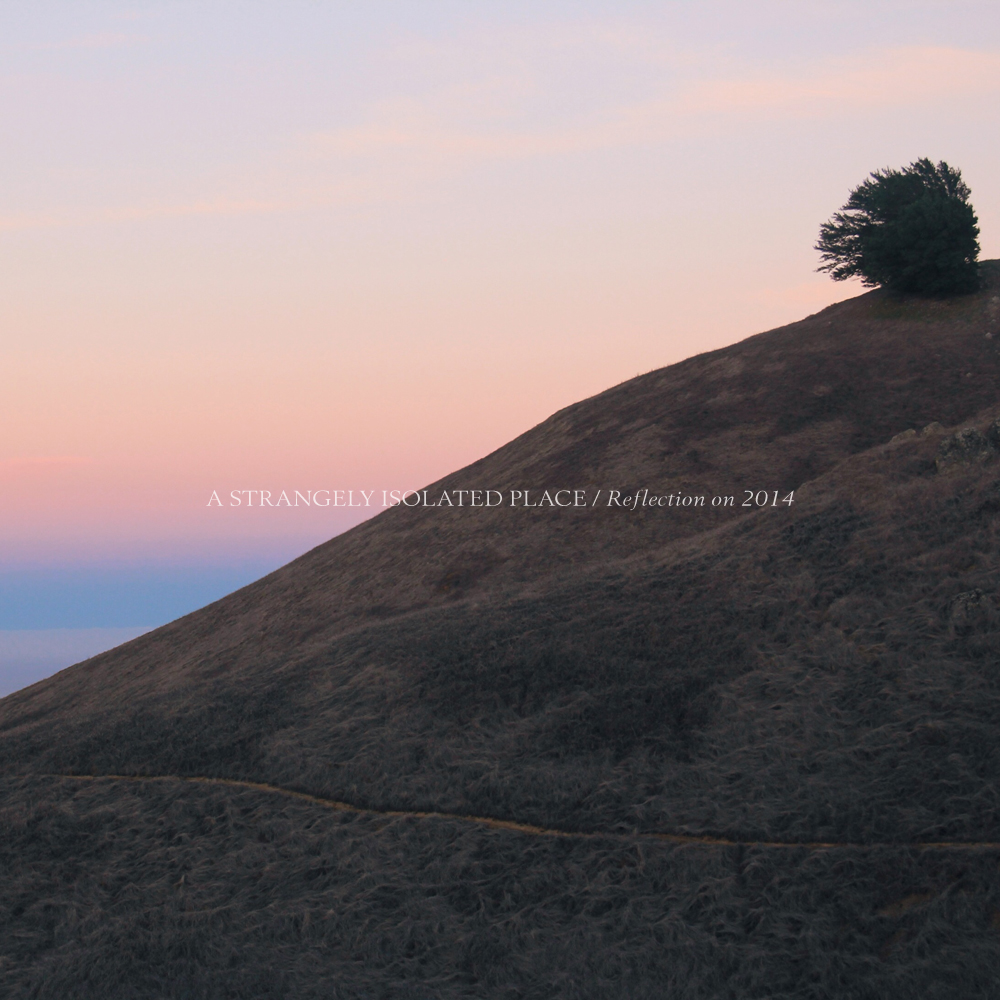
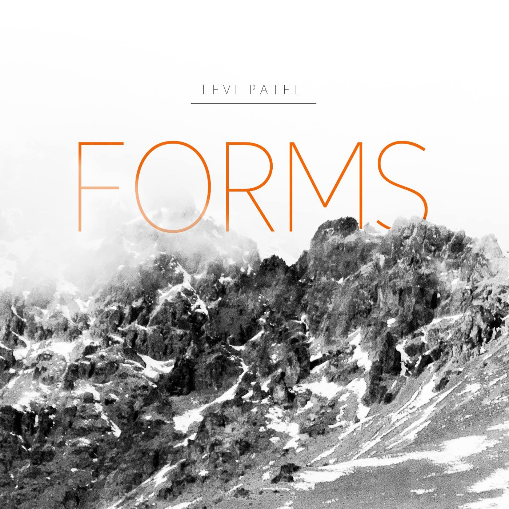

Of Sleep and Time - Release
'Of Sleep and Time', a short collection of piano and string music, is available now at levipatel.bandcamp.com
You have all been so kind, I truly hope that you enjoy this music as I do.
Feb 2015
Of Sleep and Time - A Series of Piano and String Works
Late last year I took some time away from my usual style of production to write a short series of piano and string pieces named 'Of Sleep and Time'. I traveled away from home to a small coastal town to record a beautiful piano I discovered, along with touches of bird song and rain.
My close friend Chris Park (and cellist on these tracks) accompanied me on a trip to Wellington for the mastering session with Mike Gibson and took some video on the day. Take a look inside the dimly lit but beautiful studio and hear a sample of the opening track 'As she passes'.
I will be releasing 'Of Sleep and Time' for free on February 18th.
Feb 2015
A Strangely Isolated Place - Reflection on 2014 Mix
Ryan at A Strangely Isolated Place put together a beautiful and thoughtful end of year mix featuring the likes of A Winged Victory for the Sullen, Jon Hopkins, Otto A.Totland, Loscil, and he was kind enough to open the mix with The Light Unbalances Her from Forms.
"As with last year’s episode, the mix covers the genres we love here, including modern-classical, ambient, dub-techno, electronica and post-rock. So yes, be ready for twists and turns – unlike your more considered and conventional mix techniques."
The mix can be streamed and downloaded for free at astrangelyisolatedplace.com
Dec 2014
UIC Promotional Video
I worked with two talented filmmakers on their video for Underwood International College, a part of Yonsei University in Korea. I was responsible for the soundtrack.
I only finished university last month but this makes me want to sign up for round two.
Dec 2014
Forms - Available Now
My debut record Forms is available now on Bandcamp.Accompanying the release is a beautiful music video by Dannie Cullen.
May 2014
Introducing Forms and Dado Records
- 1. Opposites of Blindness
- 2. The Light Unbalances Her
- 3. Reflection
- 4. [Rest]
- 5. Departure | Anamnesis
My debut record progresses from innocence to uncertainty, distant memories, and eventually draws to a restful end.
I am proud to announce that I will be releasing Forms on May 20th under John Beltran's Dado Records. I appreciate John's passion and musical expertise and I look forward to working with him and becoming part of the Dado Records team.
The cover photograph is part of a series by Giana Patel, which can be viewed on my Artwork page.
February 2014
Dissociation (Extended)
'A beautiful extended version of Levi's original Places Series track, Dissociation. New textures, space and melody are introduced in this emotionally charged soundtrack piece.'
Released on A Strangely Isolated Place
January 2014
Reflection Music Video
The work of filmmaker Dannie Cullen is near completion. We've written a subtle narrative and presented it in beautiful locations around New Zealand such as Muriwai Beach on the West Coast. Inspired by Jónsi & Alex, the flight of birds makes up a large part of the video. We joke that it is actually a bird documentary. We spent days shooting birds (the ethical way) including Gannets at Muriwai Beach and approximately 3500 Bar-tailed Godwits that migrate to New Zealand from Alaska for the summer.
{kind=link}
{kind=link}
January 2014
Livi Mulholland EP Production
I've been working with singer/songwriter Livi Mulholland and engineer Scott Seabright to produce a six track EP. It's been incredible to work at York Street Recording Studios and with such talented people. The tracks have been completed and she is now planning the release.
{kind=link}
{kind=link}
January 2014
Kerry & Dave
I feel honoured to have contributed And she translated into the sky to this beautiful wedding video. I feel touched by two people I've never met. Congratulations Kerry and Dave.
November 2013
Uncharted Places - Remix Compilation
Dissociation was released as one of the first contributions to the Places series by A Strangely Isolated Place.
What started as a series of releases based on inspirational places, progressed into a collective of talented artists and inspirational location-based music. Always looking to progress and with a wealth of talent amongst them, this amazing collective of emerging artists then contributed towards a very special remix project called Uncharted Places.
The brief was simple; take an existing Places Series track and re-imagine it, find your very own strangely isolated place.
Completely transformed, Odd Shapes has focused on the distant vocals of Dissociation and applied his organic, complex beat structure to give another dimension to the New Zealand forests originally depicted.
Complete album can be found at astrangelyisolatedplace.bandcamp.com
August 2013
Chronic - New Zealand Short Film
Director Adam Moorhead approached me to use Dissociation and Prologue in his film school project. The result was a powerful short film that was accepted into the Beijing International Student Film and Video Festival
Chronic is a short film that follows a mother who, after a tragic accident, neglects those who need her in order to hold onto a past that is gone forever.
With Lisa Chappell and Ilona Rodgers starring as a mother-daughter duo for the first time since Gloss; Chronic is brought to life by pure, powerful performances, leading you into the world of grief and asking whether it's ever possible to move on.
Written by David Renwick, Directed by Adam Moorhead, Photography by Luke Oliver. Music by Levi Patel.
June 2013